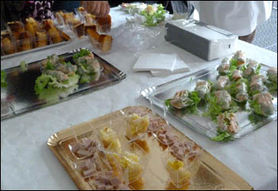

|
Я, Люлина Юлия Николаевна, прошла включенное обучение в международном институте во Франции, в Париже – в Иналько. Я обучалась там в течение одного осеннего семестра 2012 года, с сентября до конца декабря.
Корпус, в котором я училась, был построен совсем недавно, это легко заметить как снаружи, так и внутри. Здание достаточно большое, и хотя поначалу ориентироваться там достаточно сложно, но благодаря большому количеству указателей уже через несколько дней потеряться там практически невозможно. Даже в лифтах висят списки с информацией о том, какие аудитории на каких этажах находятся. Нумерация аудиторий, примерно совпадает с нашими корпусами, только после этажа они ставят точку и затем нумеруют классы. Но большие аудитории пронумерованы не в соответствии с этажами, а просто по количеству, однако к этому быстро адаптируешься.

Первый и второй этаж особенно выделяются. На первом этаже, помимо аудиторий, расположены администрация и библиотека. Кстати, вход в корпус не требует никаких студенческих или иных специальных карт, но для входа в библиотеку – нужно обязательно иметь студенческий билет, так как там стоят автоматизированные турникеты. Библиотека поразила меня количеством литературы и людей. Европейские студенты очень любят читать и находить информацию не только в интернете, но и в книгах. Книгу также можно взять почитать с собой домой, что очень помогало мне в подготовке к моим курсам. Также в библиотеке находится множество компьютеров, со свободным и бесплатным доступом в интернет. И если что-то нужно распечатать, то вы можете легко это сделать самостоятельно – в середине зала есть специальная комната для сканирования и печати. Я много времени проводила именно здесь, так как мне нравилась атмосфера: можно легко скоротать время между парами, или подготовить домашнее задание ни на что не отвлекаясь, так как все очень уважали друг друга и там постоянно была практически идеальная тишина.
Между первым и вторым этажом находится буфет, студенческая столовая. Честно говоря, минусом были только очереди в течение дня – но утром и вечером они резко уменьшались. Цены и качество, и ассортимент, несомненно, радовали, а также персонал, который иногда успевал даже пообщаться на отвлеченный темы. Вообще люди все открытые, вежливые и легкие на контакт.
На втором этаже находятся уже и большие аудитории – амфитеатры, а так же множество офисов различных подразделений, и множество стендов с расписаниями для различных факультетов и годов обучения. Очень удивили компьютерные классы, которые полностью оборудованы новыми технологиями – компьютерами Apple.
Мой первый день начался именно на этом этаже.
Перед тем как я могла приступить к учебе, мне нужно было пройти все бумажные формальности – заполнить пару анкет, оформить страховку, купить конверт, в котором я потом получила эту самую страховку. Затем меня направили уже на третий этаж, в другой кабинет, где я заканчивала эту процедуру, и уже через пару дней мне выдали мой студенческий билет. Но лекции я могла посещать уже на следующий день и без него. Кстати, у них очень удобная система с электронными студенческими билетами. Они, кроме того, могут служить кредитной карточкой для университета. Через специальные терминалы на них легко положить деньги, и потом этим студенческим ты можешь расплачиваться в библиотеке (за печать документов) и в столовой.
Мой первый день был очень тяжелым, так как сложно было разобраться с расписанием, и я не понимала на какой уровень мне идти. И это было, потому что только через неделю мы писали языковой тест, и уже после этого мы точно знали, куда нам нужно ходить. Но мы могли посещать любые пары, даже которые были не нашего уровня, чем я активно пользовалась, чтобы получить от данной стажировки максимальную пользу.
Пары проходили очень быстро и длились полтора часа. Перерывов не было. А также не было перемен. Очень часто у меня была одна пара следом за другой, и конец первой совпадал с началом второй, поэтому многие опаздывали. Но этому никто не придавал значения, так как у них такая система обучения. Главное было – это тихо зайти, чтобы никому не мешать и включиться в учебный процесс.
 
Преподаватели всегда пытались вовлечь нас в процесс обучения, не только проверяя домашние задания, но и задавая множество вопросов в течение пары. Сначала все стеснялись, но достаточно быстро мы начали отвечать, общаться, пытаться выразить себя и это делало занятия очень интересными.
Мне кажется, это одно из отличий нашего и европейского образования – там нет такого понятия, как теоретические и практические занятия – они все это совмещают, и в этом, конечно, есть как плюсы, так и минусы. Преподаватели всегда все рассказывают, лишь изредка заглядывая в заметки – это создает впечатление беседы, и занятия проходят очень интенсивно. Также все преподаватели очень любят писать на доске. Самую важную информацию они выделяют именно так – тезисно, а далее уже раскрывают суть.
В конце каждой пары нам раздавали рабочий материал для изучения и для домашних заданий, иногда нам высылали все по почте. У них очень активно развита сеть сообщений между студентами и институтом. По интернету я активно получала сообщения об учебном процессе, мероприятиях университета и даже об изменении времени занятий или что было всего несколько раз, об отмене пары.
В университете я изучила следующие дисциплины:
- Economie de la Russie (Экономика России)
- Rédaction en russe (Редактирование и перевод текстов с рус. на фран.)
- Thème littéraire (Литература)
- Expression écrite français (Правописание французского языка)
- Expression orale français (Говорение)
- Compréhension écrite en français (Чтение)
- Compréhension orale en français (Понимание)
- Grammaire du français contemporain (Грамматика современного французского языка)
- Lectures textes spécialisés d'actualité (Изучение специализированных текстов)
- Rédaction textes (Редактирование текстов)
Также факультативно я посещала занятия по:
- Anglais (Английский язык: грамматика, редактирование текстов и тд.)
- Russe juridique et administratif (Правовая и юридическая система РФ)
- Traduction d’articles de la presse russe (Перевод русской прессы на фран.)
- La Russie et le monde (Россия и ее роль в мире)
- Russie Iran (Взаимоотношение между Россией и Ираном)
- Economie de la Russie (Экономика России)
- Theme commercial Russe (Российский бизнес)
Институт уделяет большое внимание общению между студентами и их досугом. Они проводили огромное количество мероприятий, иногда между другими университетами тоже, иногда только внутри нашего. Были как дни, посвященные определенным культурам (так как Иналько-международный институт), так как и организация просмотров фильмов для практики определенных языков или на специальные темы.

Также благодаря Иналько мы имели определенные скидки, например, на занятия спортом.
Кроме учебы оставалось еще и время на досуг. И также у нас были небольшие каникулы, которые я использовала, чтобы поближе познакомиться со страной.
В результате этой поездки я:
- Получила несравнимый опыт обучения: в плане интеграции и знаний, сравнения методов преподавания и устройства французской системы образования.
- Усовершенствовала уровень французского языка. Когда ты находишься в стране изучаемого языка, это намного проще. Ты быстро адаптируешься и впитываешь информацию. Прогресс ощущается очень сильно.
- Также я поняла, что у меня имеется большой багаж знаний благодаря ВГУ. Так как я достаточно легко включилась в процесс обучения, и, кроме того, на некоторых дисциплинах я знала определенные курсы, что прибавило мне уверенности и энтузиазма в моем обучении.
- Получила новые знания, которые помогут мне в будущем, и улучшила самодисциплину. Так как большая часть информации дается студентам для самостоятельного изучения.
- Нашла определенную информацию, которую адаптирую к своей дипломной работе, так как посещала экономические курсы.
- Расширила кругозор и общение с иностранными студентами. Прониклась культурой и менталитетом другой национальности.
Люлина Ю.Н., студентка 5 курса ФМО
|